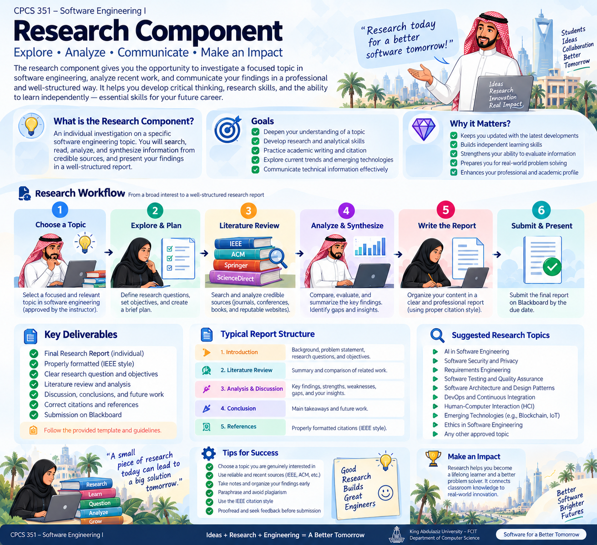

1 · Evidence, not just information
Use credible academic and technical sources, compare what they say and connect evidence to your research question.
Investigate a focused software engineering topic, analyze credible evidence and communicate your findings in a professional IEEE-style report.
This infographic is the main roadmap for the assignment. It summarizes the purpose, workflow, deliverables, report structure, suggested topics and practical success tips in one place.

Use credible academic and technical sources, compare what they say and connect evidence to your research question.
Explain relationships, strengths, weaknesses, gaps, implications and your supported insights rather than listing facts.
Your introduction, literature review, analysis, conclusion and references should work together to answer one focused question.
The infographic shows the expected structure. These official IEEE resources help you implement the formatting, writing and citation conventions correctly.
A practical Word example showing how an IEEE-style manuscript is organized.
The official author guide for article organization, citations, references, figures, tables, equations, terminology and editorial conventions.
The research component contributes 10% of the CPCS 351 course grade. The rubric below evaluates the assignment on a 10-point scale.
| Criterion | Strong evidence | Weak / partial evidence | Points |
|---|---|---|---|
| Understanding of the Topic | Precise problem, appropriate scope and strong conceptual understanding. | Question or scope is vague or inconsistently addressed. | 2.0 |
| Research Depth & Analysis | Analyzes relationships, comparisons, benefits, limitations and implications. | Mostly descriptive; weak connection between evidence and claims. | 2.0 |
| Clarity & Organization | Purposeful sequence and coherent argument. | Uneven, repetitive or fragmented organization. | 1.5 |
| References & IEEE Citations | Credible sources integrated and documented consistently. | Weak sources, missing citations or substantial IEEE errors. | 1.5 |
| Critical Thinking & Originality | Synthesizes evidence and develops defensible observations. | Limited synthesis or critical evaluation. | 1.0 |
| Technical Accuracy | Correct software engineering terminology and concepts. | Conceptual inaccuracies or unsupported technical statements. | 1.0 |
| Writing Quality | Clear, concise and professional academic writing. | Language repeatedly interferes with clarity. | 1.0 |
| Conclusion & Recommendations | Synthesizes findings and answers the research question. | Repeats earlier text or gives unsupported conclusions. | 1.0 |
| TOTAL | 10.0 | ||